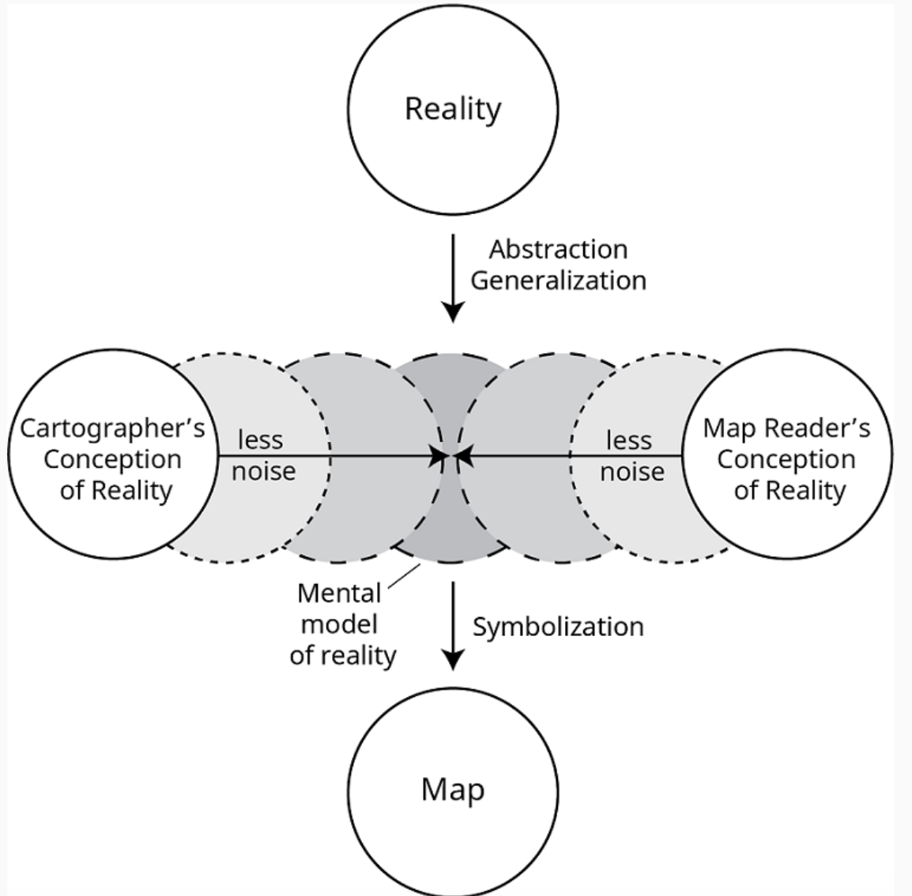
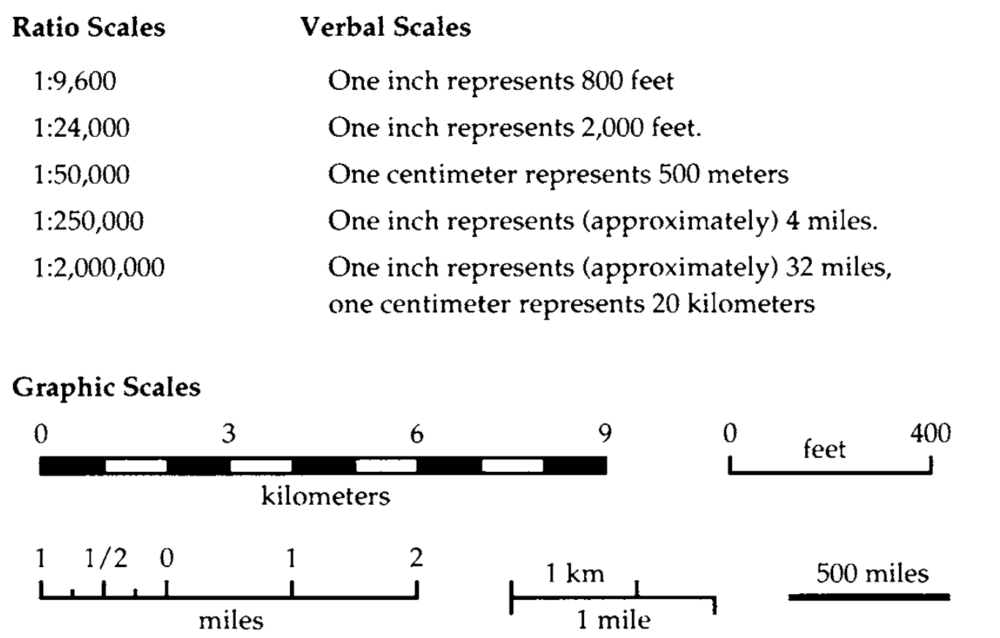
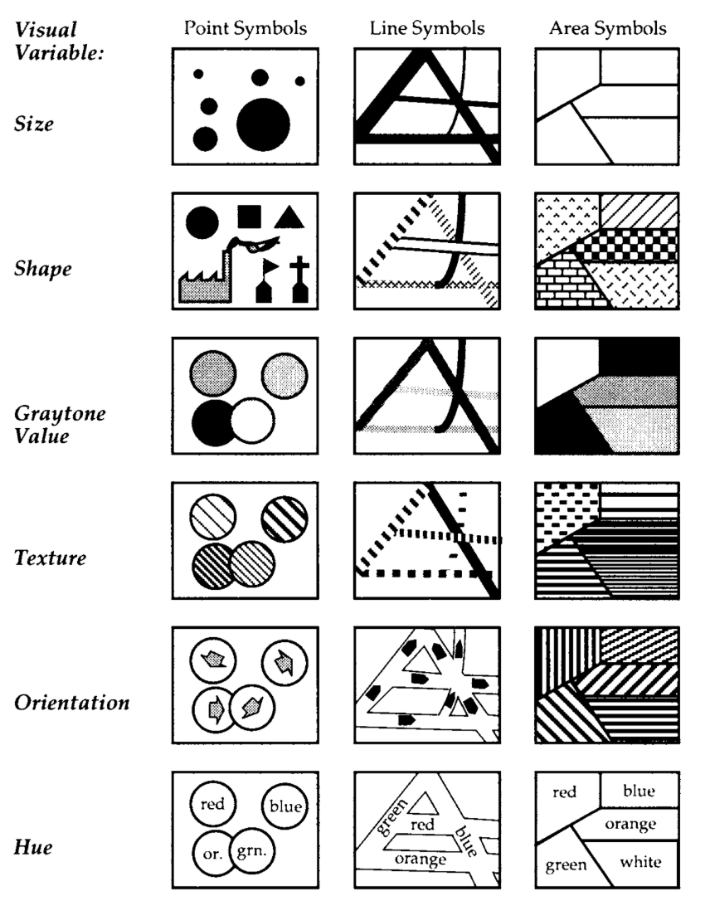
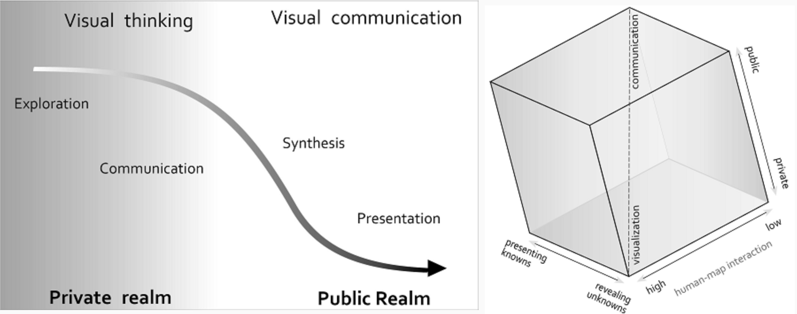

Maps as Systems of Inference
We have discussed so far different focal areas of cartographic research: representation and map design, as well as interaction, inference, and knowledge production through map use. Together, these perspectives move cartography forward from designing maps as static representations to understanding them as interactive systems through which users generate insight.
However, this shift raises a more fundamental question that we have touched on but not yet addressed directly: What is it, exactly, that users are reasoning with or inferring from?
Regardless of whether a map is static or interactive, inference does not occur independently of representation. Instead, it is grounded in the underlying structure of the map itself. This means that rather than moving away from the fundamentals of cartography, thinking about inference requires us to return to them but with a different perspective. To make this connection explicit, we organize this page around four guiding questions:
- Why does inference need to be studied?
- What is inference based on?
- How does inference unfold over time?
- How can inference be studied and improved?
Scientific Cartography and Scientific Thinking
This line of thinking connects directly to earlier traditions in cartography, particularly the idea of scientific cartography. As early as the 19th century, cartography was framed as a scientific endeavor, in part because thematic map design involves both deduction and induction, which are forms of reasoning closely associated with scientific practice. From this perspective, “scientific cartography” constrains artistic imagination in ways that allow maps to effectively communicate their content, through the establishment and application of design rules and principles.
Subsequently, a functionalist approach to scientific cartography emerged, focusing on understanding how specific visual elements function in communicating information to the map reader. The goal was not simply to design maps, but to understand how and why they work. To investigate these questions, cartographers began applying the scientific method, using reason and logic to evaluate design choices. Cartography is neither an experimental science like physics nor a truth-seeking discipline like the social sciences, but it nevertheless employs the scientific method through systematic reasoning.
Importantly, this functionalist perspective challenged earlier notions of “map logic” based on convention. In The Look of Maps (Robinson, 1952), it was argued that rules such as “brown is the best color for terrain” are not universal truths, but conventions that must be empirically tested. Functionalist cartography therefore shifted attention toward the systematic study of map users, rather than maps alone, in order to provide more objective evidence about the effectiveness of design decisions.
In line with this positivist approach, scholars developed theories to explain how maps are read and understood. One of the most influential was the map communication model (Figure 1). The aim of this model was to transfer the mental model of the cartographer to that of the map reader while minimizing information loss.

Figure 1: A schematic depiction of common components of map communication models and their functional relationships to each other.
However, this model was not without critique. Some scholars questioned its goal of producing a single “optimal map,” arguing that such solutions often carry both overt and hidden biases (Monmonier, 1991). Others pointed out that not all maps are designed to communicate a fixed message—many are intended to support exploration rather than transmission.
In summary, scientific cartography emerged as an approach focused on systematically studying how design choices shape interpretation. Rather than treating maps as neutral representations, this perspective recognizes that variations in scale, projection, and symbolization can lead to different understandings of the same underlying data.
Elements of Map Inference
Following this line of thought, we can more directly connect cartographic representation to inference by returning to the fundamental elements of maps and examining how different aspects of a map shape what users are able to see and interpret. The following elements, scale, projection, and symbolization, are central to this process.
Scale
Scale is one of the most fundamental elements shaping what can be inferred from a map. Because maps are necessarily smaller than the reality they represent, scale determines the level of detail that can be included and, consequently, the patterns that can be observed.
It is helpful to distinguish between two meanings of scale. Geographic scale refers to the general scope or extent of phenomena, in the way we use the term in everyday language. In this sense, “large scale” refers to something covering a large area, such as a country or the entire globe.
Cartographic scale, however, is defined mathematically and may feel counterintuitive at first. It is often expressed as a representative fraction. For example, a map with a scale of 1:24,000 means that one unit on the map represents 24,000 units in the real world. When we “zoom in,” the denominator becomes smaller (e.g., 1:10,000), and the map is considered large scale because features appear larger and more detailed. Conversely, “small-scale” maps are more zoomed out. A useful way to remember this is: an area appears larger on a large-scale map and smaller on a small-scale map.
A map can represent its scale in three ways (Figure 2): as a ratio, a verbal statement, or a graphic scale. Ratio scales relate one unit of distance on the map to a corresponding unit on the ground (e.g., 1:10,000), and are dimensionless as long as the units are consistent. Verbal scales, such as “one inch represents one mile,” are often more intuitive for users. Graphic scales, however, are typically the most reliable, especially when maps are resized, since they scale proportionally with the map itself. For example, a 5-inch-wide map labeled “1:50,000” would have a scale less than 1:80,000 if reduced to fit a newspaper column or a mobile-device screen that is 3 inches wide, whereas a scale bar representing a half mile would shrink along with the map’s other symbols and distances.

Figure 2: Three common ways to represent cartographic scale
Web-based maps and similar interactive applications exemplifies a fourth type of map scale: the zoom slider that moves up or down to indicate relative distance above the surface, or the interactive plus and minus buttons that produce the same effect. Zooming out yields a broader geographic scope with a smaller scale and less detail, and zooming in provides a narrower view with greater detail.
Figure 3: Here is an example of a very unique Harry Potter themed web map where you could scale in an interactive setting. The author designed a custom basemap in Mapbox. Map by Atlas Guo at Cartoguophy

Figure 4: In addition to conventional representations, some maps express scale in more interpretive ways. In this Great Wall visualization (lower left corner), scale is described verbally in relation to the viewer’s perspective (e.g., “the closer you see, the larger the scale”). Rather than treating scale as fixed, this approach frames it as something that changes with distance and viewpoint, making spatial relationships more intuitive. Map by Zhaoxu Sui. See the full portfolio here.
Importantly, data also has scale. Data is collected or digitized at a particular resolution, which constrains how it can be displayed. Ideally, a map should not be shown at a larger scale than its underlying data supports. For example, census data collected at the state level cannot be meaningfully displayed at the block level. Similarly, the resolution of vector or raster data affects how much detail can be represented. These constraints directly influence what patterns are visible and what conclusions can be drawn.
As Monmonier notes, large-scale maps allow finer detail, while small-scale maps require greater generalization and omission, effectively limiting the map’s “capacity for truth.” These differences are not merely technical because they shape interpretation. At smaller scales, local variation is smoothed out, making broad regional patterns more visible; at larger scales, local heterogeneity becomes apparent. In this sense, scale acts as a filter on reality, structuring what users are able to observe and analyze, and therefore influencing the kinds of questions that can be asked and the conclusions that can be drawn.
Projection
Projection further illustrates how cartographic design shapes inference by determining how spatial relationships are preserved or distorted. Because the Earth’s curved surface must be transformed onto a flat plane, projections distort five key geographic properties: area, angles, shape, distance, and direction. Some projections preserve local angles but distort area, while others preserve area but distort shape. No projection can preserve all properties simultaneously.
We all know how projections work in principle. But a more important question is: why do so many different projections exist at all?
The answer lies in their functional purpose. Because no projection can preserve all geographic properties at once, each projection is designed to prioritize certain relationships depending on the task at hand. For example, the Mercator projection preserves local angles and direction, allowing straight lines to represent constant compass bearings (rhumb lines), which makes it highly useful for navigation. In contrast, the gnomonic projection represents great-circle routes as straight lines, showing the shortest path between two points. In practice, navigators often use both: the gnomonic projection to identify the shortest route, and the Mercator projection to follow it using manageable directional segments.
More broadly, commonly used projections can be grouped by what they preserve:
- Conformal projections (e.g., Mercator): preserve angles and shape locally, useful for navigation
- Equal-area projections (e.g., Albers, Mollweide): preserve area, useful for comparison and analysis
- Equidistant projections: preserve distance from certain points, useful for travel and communication planning
- Compromise projections (e.g., Robinson, Winkel Tripel): balance distortions, useful for general-purpose reference maps
Each of these tradeoffs support different kinds of inference. For example, projections that exaggerate area can lead users to overestimate the importance or size of certain regions, while equal-area projections are better suited for comparing spatial extent. Practically, comparing country sizes requires an equal-area projection, while understanding directional relationships benefits from a conformal one. In this sense, projection determines what kinds of spatial reasoning are valid.
Beyond these common projections, cartographers have also developed more unconventional projections that may appear unusual at first glance, but are often designed for specific analytical or communicative purposes.1
{kind=link}
{kind=link}
Figure 5: Left - The Berghaus star projection divides the globe into wedge-shaped segments radiating from a central point. This design reduces distortion by interrupting the map, rather than stretching it continuously across the surface. While it is not commonly used for navigation or everyday reference, it is useful for polar-centered views and for minimizing distortion across multiple regions simultaneously. Right - The Bonne projection, often appearing heart-shaped, is a pseudoconical equal-area projection. Its primary strength is preserving area, making it useful for thematic mapping where accurate comparisons of size are important. Although its shape may seem decorative, it reflects a specific mathematical property: parallels are concentric arcs, and distances along them are preserved. This makes it useful for certain regional analyses, even if it is less common in modern digital mapping.
{kind=link}
{kind=link}
Figure 6: Left - The Cassini projection is a cylindrical projection centered on a single meridian, where distances along that central line are preserved. The Cassini projection was historically used for regional mapping, particularly in early national surveys. Right - The cube projection is a type of polyhedral projection, where the Earth is projected onto the faces of a three-dimensional shape (in this case, a cube) and then unfolded into a flat surface. Each face of the cube preserves spatial relationships relatively well within its region, but edges between faces create discontinuities. While this makes the map less intuitive for continuous navigation, it can be useful for balancing distortion globally or for creating visually structured representations of space.
{kind=link}
{kind=link}
Figure 7: Left - The Eckert projection is a family of equal-area pseudocylindrical projections designed to balance visual clarity with accurate area representation. Its shape, wider near the equator and tapered toward the poles, reflects an attempt to distribute distortion more evenly across the map. While continents may appear slightly stretched or compressed, the projection supports more reliable comparisons of spatial extent, which is critical for many analytical tasks. From an inferential perspective, this projection is better suited for questions like “Which region is larger?” or “How does distribution vary globally?”, rather than for navigation or precise local measurements. Right - Goode’s Homolosine projection takes a different approach by introducing intentional interruptions, often described as an “orange peel” map. It combines two projections to preserve area while minimizing distortion across continents, at the cost of breaking the map into separate lobes. By interrupting the oceans, the projection reduces distortion where it matters most, making it especially useful for global thematic mapping, such as climate patterns or population distribution.
Symbolization
Symbolization provides the visual language through which users interpret spatial data, and is therefore central to how inference occurs.
Understanding symbolization begins with two foundational ideas: the three geometric types of symbols and the six visual variables. Symbols on maps are typically represented as points, lines, or areas. Most general-purpose maps combine all three: for example, point symbols for landmarks, line symbols for roads and rivers, and area symbols for regions such as parks or cities. In contrast, statistical maps often rely on a single type of symbol, such as dots or shaded areas, to represent numerical data.
To convey differences, symbols vary along six visual variables: size, shape, value (graytone), texture, orientation, and hue (color). Each of these variables is suited to different types of data. Shape, texture, and hue are effective for representing qualitative differences, such as land use or categories. For quantitative differences, size is often used to represent counts or magnitude, while graytone value is preferred for ordered data, such as rates or intensities. Orientation is typically used for directional phenomena, such as wind or movement.

Figure 8: The six visual variables and their typical applications for representing different types of data.
A key challenge in map design is ensuring a good match between the data and the chosen visual variable. Poor matches can frustrate or confuse users and interfere with inference. One common issue is the misuse of color: novice mapmakers may use multiple bright hues to represent quantitative differences, even though colors are not easily perceived as ordered. In contrast, graytone values, ranging from light to dark, are much easier for users to interpret as increasing or decreasing quantities.
{kind=link}
{kind=link}
Figure 9: Two maps visualizing the same ecological dataset using different symbolization strategies. While both represent identical information, they differ in their use of visual variables such as color, size, and symbol type. These differences shape how patterns are perceived, compared, and interpreted. Which map better supports your understanding of the data and why?
This problem is compounded by perceptual limitations. Most users cannot reliably organize colors into a consistent sequence, and those with color vision deficiencies may struggle to distinguish certain hues (e.g., red and green). By comparison, users can more easily interpret a sequence of graytones, where darker typically indicates more and lighter indicates less. While a legend can help make a confusing map usable, it cannot make it efficient. More broadly, issues such as poor contrast, overly complex symbols, inconsistent classification, or excessive visual clutter can all interfere with inference by making patterns harder to perceive and relationships more difficult to interpret.
From the perspective of cartographic visualization, symbolization plays a critical role in guiding attention, supporting comparison, and enabling pattern recognition. In this way, symbolization directly shapes what users notice, how they interpret relationships, and ultimately what they are able to infer from the map.
If you’re interested in more detailed design rules and methods, there is a rich body of work on different elements of maps from the UCGIS BoK Entries.2
At this point, it is important to recognize a fundamental principle of cartography: maps do not simply represent reality. As Mark Monmonier (Chapter 3) argues, all maps tell “white lies,” not because they are deceptive, but because distortion is unavoidable when representing a complex world in limited space.
The elements we have discussed, scale, projection, and symbolization, are the primary sources of these distortions. Each involves choices about what to include, what to omit, and how to structure information.
Importantly, these distortions play critical roles on inference. A map designed for navigation prioritizes direction, while a statistical map prioritizes comparison; each supports different kinds of reasoning. Then the key question is beyond whether a map is accurate, but again, how its design choices shape what users are able to see and interpret.
Geovisualization and the Process of Inference
It is useful to consider the perspective of geovisualization as a way of understanding how inference unfolds over time. Foundational frameworks such as DiBiase’s “Swoopy” model and MacEachren’s Cartography conceptualize maps as part of a broader process of visual thinking and knowledge construction. These frameworks describe a continuum of map use—from exploration, to analysis, to synthesis, and ultimately to presentation or communication. Rather than discrete steps, these stages are interconnected, with users iteratively engaging with data and refining their understanding.
A key contribution of MacEachren’s Cartography framework is the introduction of interaction, user type, and task as central dimensions. It highlights that maps are used differently depending on whether the goal is exploratory analysis or communication, whether the user is an expert or a member of the public, and how much interaction is available. Highly interactive environments are typically associated with expert users engaged in exploratory tasks, where users generate hypotheses, manipulate data, and test ideas. In contrast, lower levels of interaction are often associated with communication tasks, where maps are designed to clearly convey established findings to broader audiences.

Figure 10: Left- DiBiase’s (1990) “Swoopy”. Right - MacEachren’s (1994) Cartography3 conceptualization of geovisualization on tasks, users, and interaction types as dimensions.
From this perspective, inference is an iterative and evolving process. Users begin by exploring data to identify patterns or anomalies, then analyze relationships and test hypotheses, synthesize findings into broader insights, and ultimately communicate their conclusions. This process is often supported by interactive systems that allow users to generate new map views in response to questions in near real time, aligning the pace of visualization with the pace of thinking. With the rise of geovisual analytics, this process is further enhanced through the integration of visualization with computational methods, combining human perceptual strengths with machine-based analysis to support more complex reasoning.
Maintaining a Scientific Approach to Cartography
The idea that map elements shape inference leads directly to the need for maintaining ascientific approach to map design. If different choices in scale, projection, or symbolization lead to different interpretations, then map design cannot rely solely on intuition or convention, but must be studied, tested, and evaluated.
Scientific cartography therefore focuses on understanding how design decisions influence perception, interpretation, and usability. This includes empirical studies of visual variables, classification schemes, and layout choices, all aimed at determining how maps can better support accurate and effective reasoning. In this sense, the fundamental elements described earlier become not just design components, but variables in a broader scientific investigation of how maps shape understanding.
More broadly, scientific approaches to map design aim to understand maps, mapmaking, and map use with the goal of improving how maps function. This research takes several forms. Some studies apply the scientific method directly, using controlled experiments to test how maps are read, used, or understood. Other work develops empirical observations of map use or design practices to generate hypotheses for further testing. A third line of research connects user-centered design with participatory approaches, working collaboratively with communities to co-design maps that address real-world problems. Across these approaches, a key goal is to produce knowledge that is generalizable or transferable to other contexts.
Beyond design itself, cartography should also examine how maps support scientific thinking and the generation of new knowledge. This perspective connects directly to earlier discussions of interaction and geovisualization. With digital mapping, users can generate maps dynamically, explore data iteratively, and pose new questions in near real time. Maps thus function not only as tools for presenting results, but also for exploration, hypothesis generation, and analytical reasoning.
Taken together, we bring forward the central idea of this lesson: cartography is not simply about representing the world; it is part of how knowledge is produced, evaluated, and shared.
Acknowledgement
We would like to thank Zhaoxu Sui (PhD student, Penn State University) and Atlas Guo (PhD, University of Wisconsin–Madison), whose work focuses on cartographic representation and geovisualization, for generously sharing examples used in this lesson. We also thank Dr. Jeff Howarth, Associate Professor and the creator of Middlebury’s GIS/Cartography curriculum, for many of the materials that informed the development of this lesson.
If you are interested in learning more about cartography, please feel free to explore the following resources compiled by Zhaoxu Sui linked here.